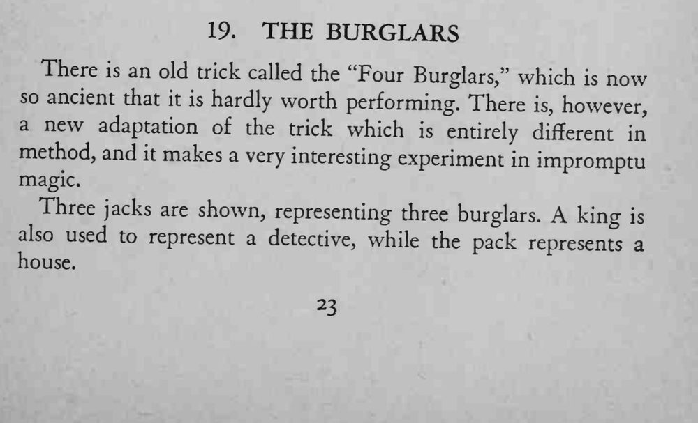
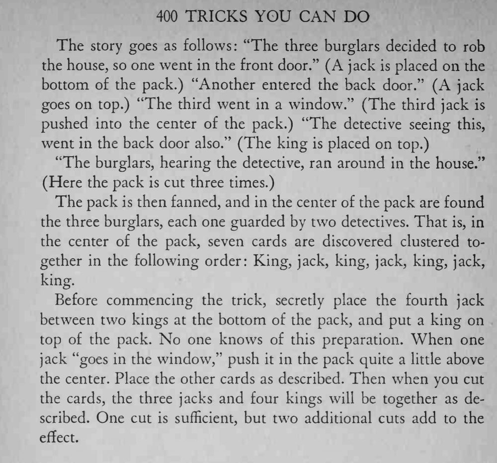

三张 J 扮成三个窃贼潜入“房子”，一张 K 扮成侦探；最后展开牌堆，三个窃贼挤在牌堆中央，每个旁边都站着侦探。
第三张 J 插入的高度决定七张牌能否正好聚齐，练习时要记准位置。


There is an old trick called the "Four Burglars," which now so ancient that it is hardly worth performing. There however, new is, a adaptation of the trick which is entirely different in method, and it makes a very interesting experiment in impromptu magic. Three jacks are shown, representing three burglars. A king also used to represent a detective, while the pack represents a house. The story goes as follows: "The three burglars decided to rob the house, so one went in the front door." (A jack is placed on the bottom of the pack.) "Another entered the back door." (A jack goes on top.) "The third went in a window." (The third jack is pushed into the center of the pack.) "The detective seeing this, went in the back door also." (The king is placed on top.) "The burglars, hearing the detective, ran around in the house." (Here the pack is cut three times.) The pack is then fanned, and in the center of the pack are found the three burglars, each one guarded by two detectives. That is, in the center of the pack, seven cards are discovered clustered together in the following order: King, jack, king, jack, king, jack, king. Before commencing the trick, secretly place the fourth jack between two kings at the bottom of the pack, and put a king on top of the pack. No one knows of this preparation. When one jack "goes in the window," push it in the pack quite a little above the center. Place the other cards as described. Then when you cut the cards, the three jacks and four kings will be together as described. One cut is sufficient, but two additional cuts add to the effect.